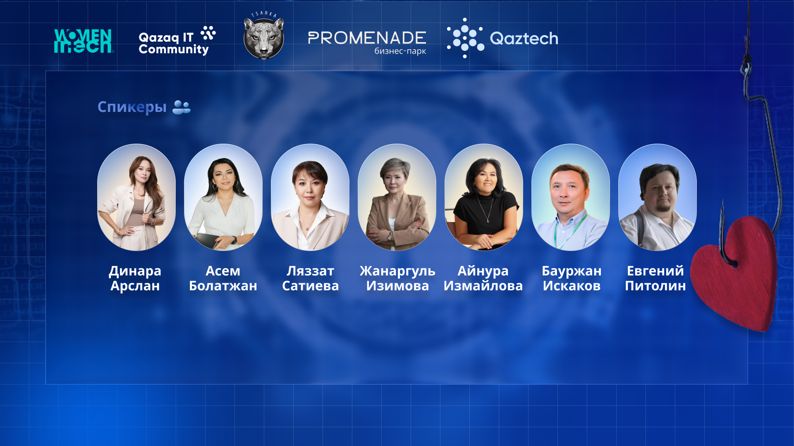
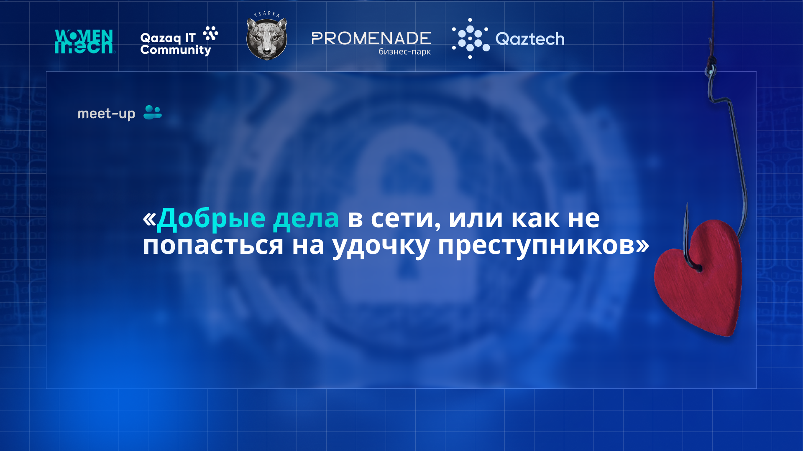
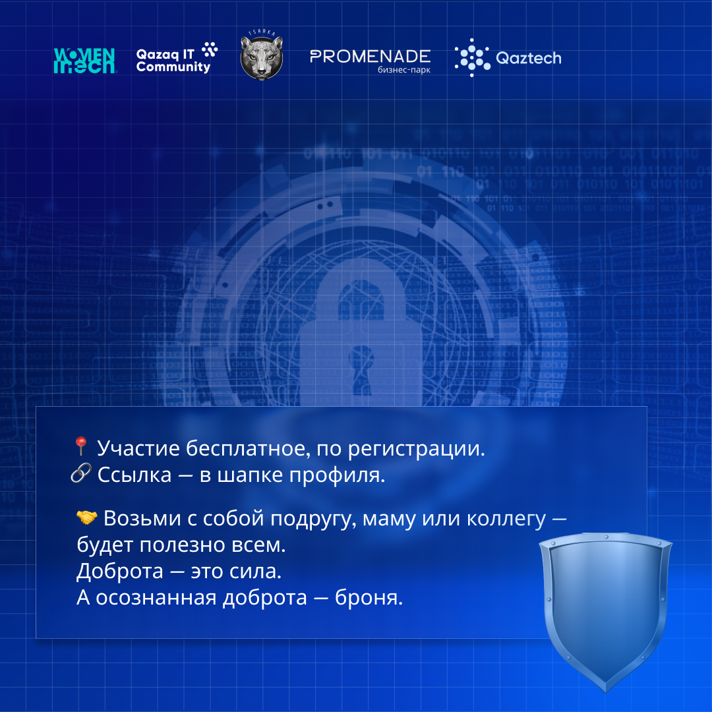
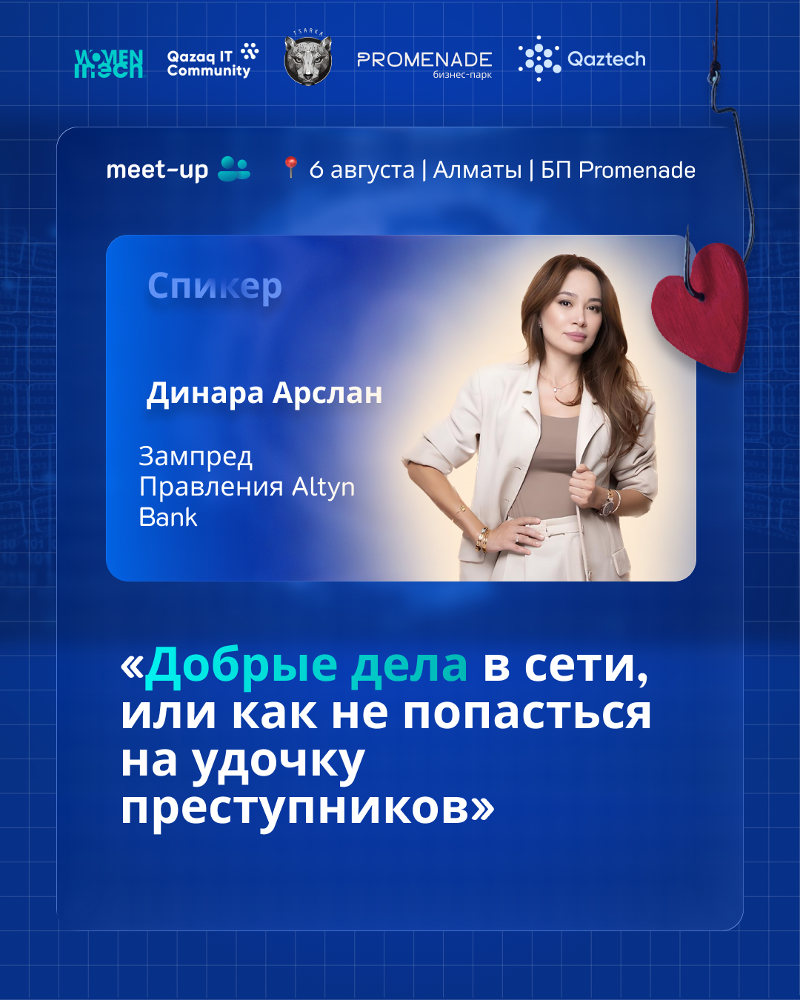
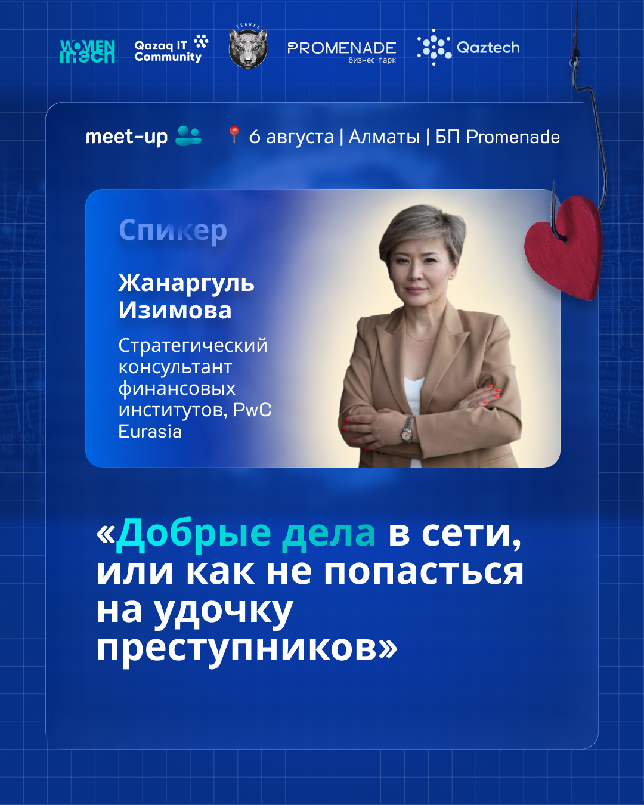
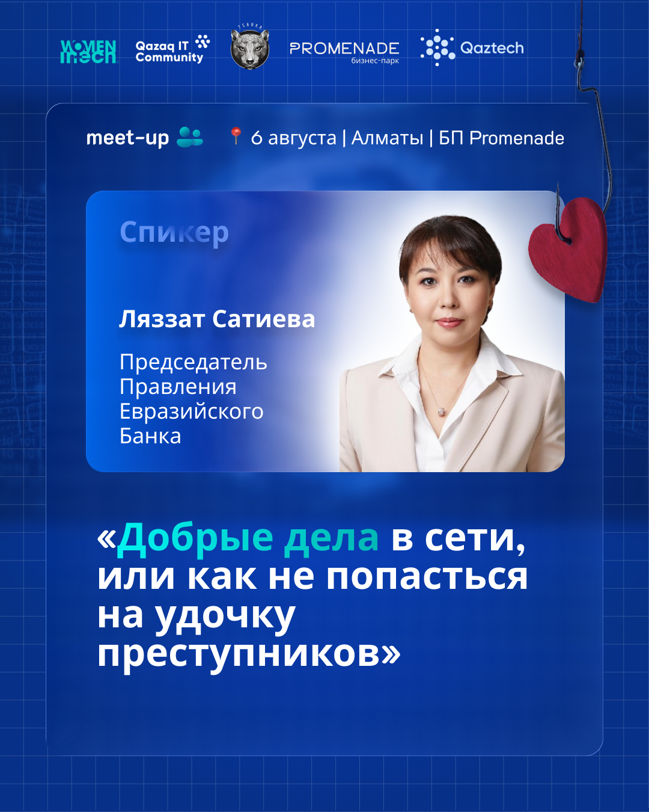
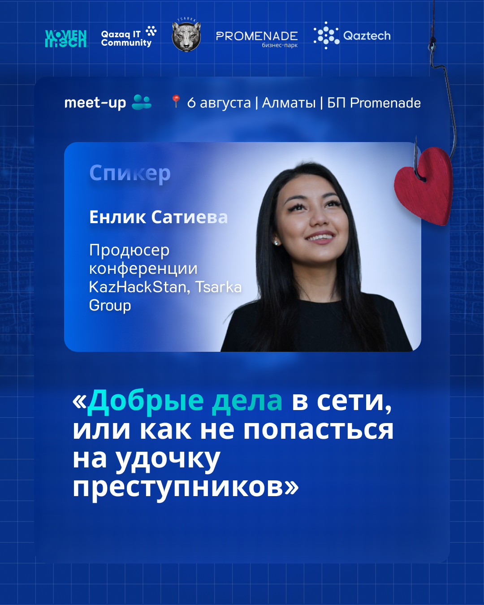
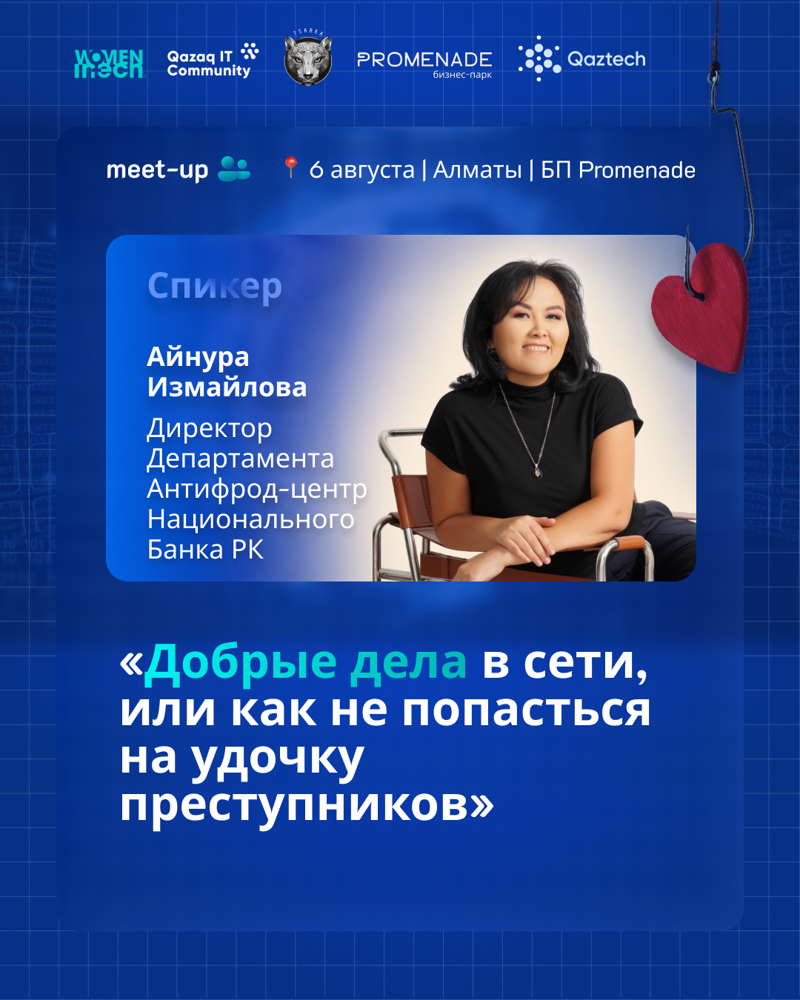

Social Media Visual Identity & Information Design
Three distinct visual directions created to maintain brand consistency while offering variety for different post types.


6 custom designs translating complex tech data into digestible, shareable Instagram slides.

7 unique layouts highlighting industry leaders, designed to maximize engagement and professional aesthetics.




